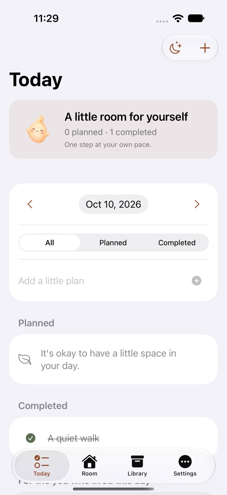
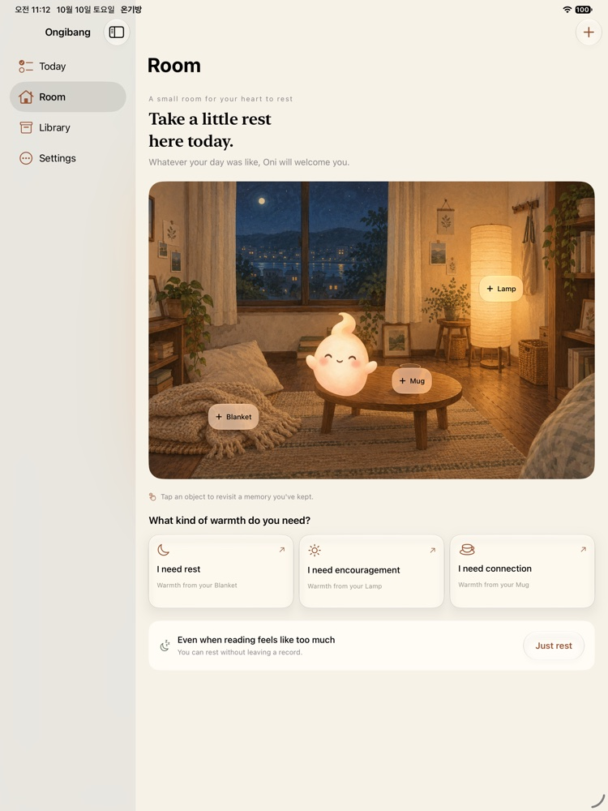
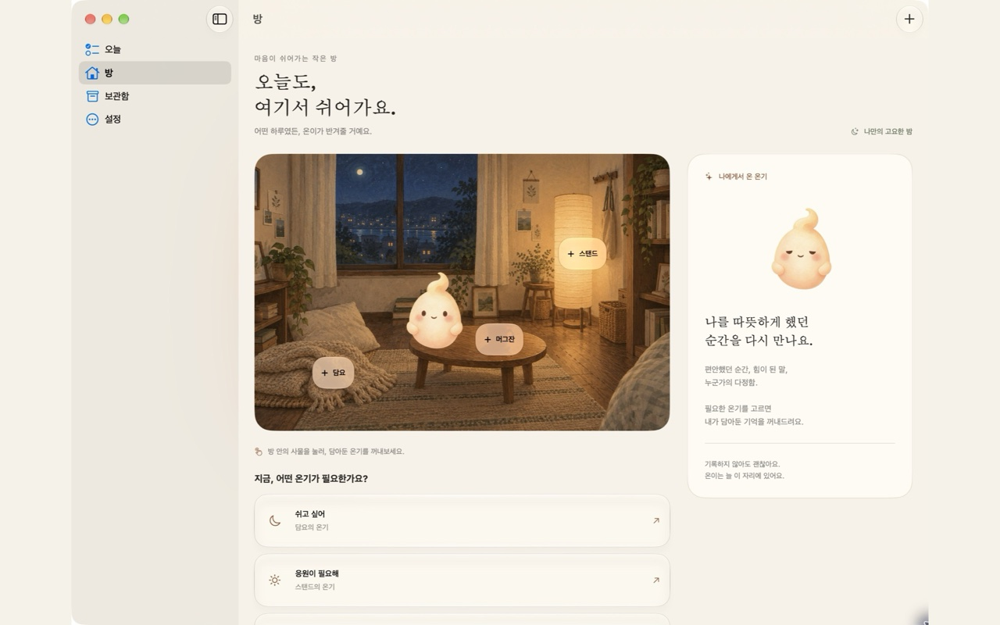

익숙한 조작, 온기방의 분위기
따뜻한 방 위에, Liquid Glass.
Apple 기본 탭·사이드바와 입력 방식에 투명한 유리 질감의 조작 요소를 더했어요. 글과 기억은 편안하게 읽을 수 있는 배경에 담아요.
온기방 1.3 · 오늘을 마친 나를 위한 방
오늘의 작은 계획을 담고, 마친 나를 돌아봐요.
하루 끝에는 작은 정령 온이와 잠깐 쉬어가요.
매일 오지 않아도. 아무것도 남기지 않아도. 괜찮아요.
iPhone iPad Mac 한국어 · English
2026년 10월 10일 제출 · 현재 App Store 버전은 1.1입니다.

온기방 1.3 · 새롭게 이어지는 하루
할 일을 관리하는 것만큼, 마친 나를 돌보는 일도.
오늘 · 방 · 보관함 · 설정, 익숙한 Apple 탐색 안에 담았어요.
제목과 날짜로 작은 계획을 남겨요. 시간·메모·반복·알림은 필요할 때만. 마친 일은 날짜별로 확인하고, 지난 일은 원래 날짜에 그대로 두어요.
일정 사용 안내 →‘오늘 마무리하기’에서 기분과 한 문장을 남겨요. 완료한 일이 없어도, 쓰고 싶지 않아도 괜찮아요. 회고는 일정과 별도로 보관해요.
하루 마무리 안내 →필요한 온기를 고르고 기억을 읽거나, 소리 없이 1분 쉬어요. 점수와 연속 출석 없이, 언제나 나의 속도로.
여기서 잠깐 쉬기 →익숙한 조작, 온기방의 분위기
Apple 기본 탭·사이드바와 입력 방식에 투명한 유리 질감의 조작 요소를 더했어요. 글과 기억은 편안하게 읽을 수 있는 배경에 담아요.
필요한 만큼만 연결
앱 언어는 기기의 설정을 따라요. iCloud를 직접 켜면 같은 Apple 계정의 기기에서 기억·사진·일정·하루 기록을 함께 봐요. 기기에만 보관할 수도 있어요.
1.3의 기능을 미리 소개합니다. 승인 후 수동 출시 예정이며 출시 일정은 아직 정해지지 않았어요.
당신의 마음에 맞게
담요, 스탠드, 머그잔을 눌러보세요.
온이가 곁으로 다가가고, 그 자리에 담아둘 기억을 보여줘요.
사물을 누르거나 아래 버튼으로 온기를 선택하세요.
사용 방법을 보여주는 기억 예시
담요에 담아둔 기억
햇볕이 들던 주말 오후.
아무것도 하지 않아도
마음이 편안했던 순간.
그때의 나처럼, 오늘도 쉬어도 괜찮아요.
홈페이지에서는 예시를 보여드려요. 앱에서는 당신이 직접 온기를 지정한 기억만 꺼내요.
온이는 늘 같은 마음으로
천천히 둥실 떠오르고, 가끔 눈을 깜빡여요.
당신이 고른 기억 곁에서 조용히 쉬어가요.
먹이를 주거나 출석을 채울 필요는 없어요.
온기방은 당신이 돌봐야 하는 일이 되지 않아요.
아주 작은 시작
짧은 문장이나 사진 한 장.
둘 중 하나만 있어도 충분해요.
쉼, 응원, 연결 중에서 골라요.
‘보관만 하기’로 남겨도 괜찮아요.
지금 필요한 온기를 선택해요.
최근 담은 기억부터 만나볼 수 있어요.
어디에서든, 나만의 작은 방
내가 머물기 편한 화면으로, 같은 온기를 만나요.

손안에서 차분하게
오늘의 일정과 마친 일을 살펴보고,
하루 마무리와 쉼으로 이어가요.
하단 탭으로 오늘·방·보관함·설정을 오가요.

넓은 화면에서 여유롭게
넓은 화면에서는 방과 기억을 함께 보고,
좁은 화면에서는 한 장씩 읽어요.
화면에 맞춰 편안하게 머물 수 있어요.

하루를 마친 책상에서도
사이드바로 오늘과 방을 오가고,
⌘N으로 현재 화면의 새 기록을 만들어요.
Escape로 쉬기 화면을 끝낼 수 있어요.
1.3 실제 앱 화면을 미리 보여드려요. iPhone·iPad는 영어, Mac은 한국어 화면입니다. 사용자가 작성한 기록은 번역하지 않아요.
iCloud와 기기 이동 안내당신의 기억은, 당신의 것
회원가입 없이 바로 들어오세요.
기기에 먼저 저장하고, 원할 때만 iCloud로 연결해요.
개발자는 비공개 기록을 열람하지 않아요.
오프라인에서도 기록
비공개 iCloud와 백업
백업 파일은 암호화하지 않아요. 안전한 위치에 보관하세요. 기기의 백업 설정과 직접 선택한 외부 저장 서비스의 정책이 적용될 수 있어요.
오늘은 기록하지 않아도 좋아요
온이와 방을 바라보며, 잠깐 숨을 고르세요.
소리 없이, 언제든 끝낼 수 있는 고요한 쉼.
온기방 1.3 · iOS·Mac 심사 대기 중 · 현재 출시 버전 1.1
자주 묻는 이야기
물론이에요. 방에 들어와 온이와 잠깐 머물거나 ‘그냥 쉬기’를 선택할 수 있어요. 기록이나 출석을 요구하지 않아요.
기본값은 ‘보관만 하기’예요. 직접 쉼·응원·연결을 지정한 기억만 해당 온기 흐름에 나타나요. 언제든 보관함에서 바꿀 수 있어요.
1.3에서는 각 기기의 ‘설정’에서 ‘나의 기기끼리 동기화’를 켜면 같은 Apple 계정으로 연결돼요. 오프라인에서도 먼저 저장하며, 연결이 늦어지면 ‘동기화 다시 시도’를 사용할 수 있어요. 현재 출시된 1.1에서는 백업으로 직접 옮깁니다. 기기 이동 안내를 확인해주세요.
저장 시 사진을 앱 내부에 복사하기 때문에 원본을 삭제해도 저장된 기억의 사진은 유지돼요.
홈페이지는 앱을 소개하는 예시 체험이에요. 글이나 사진을 입력·저장하지 않아요. 1분 휴식의 진행 상태도 방문 중에만 유지돼요.
1.3은 1.1의 기억 저장소와 식별자를 유지하고 1.1 백업도 가져올 수 있어요. 별도 1.0 저장소와 백업의 자동 변환은 지원하지 않아요. 업데이트 전 필요한 기록을 별도로 보관해주세요. 이전 버전 개인정보 안내도 확인할 수 있어요.
찾는 이야기가 없나요?
고객 지원에 문의하기